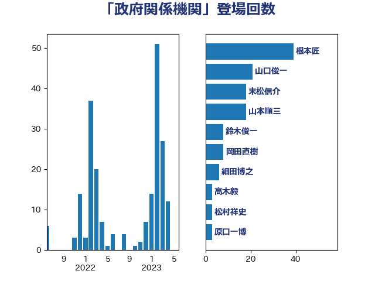

単語「政府関係機関」

| 根本匠 | 自由民主党 | 39 回 |
| 山口俊一 | 自由民主党 | 21 回 |
| 末松信介 | 自由民主党 | 18 回 |
| 山本順三 | 自由民主党 | 18 回 |
| 鈴木俊一 | 自由民主党 | 8 回 |
| 岡田直樹 | 自由民主党 | 8 回 |
| 細田博之 | 自由民主党 | 6 回 |
| 高木毅 | 自由民主党 | 3 回 |
| 松村祥史 | 自由民主党 | 3 回 |
| 原口一博 | 立憲民主党 | 3 回 |
| 鷲尾英一郎 | 自由民主党 | 2 回 |
| 青山周平 | 自由民主党 | 2 回 |
| 赤羽一嘉 | 公明党 | 2 回 |
| 西村康稔 | 自由民主党 | 2 回 |
| 葉梨康弘 | 自由民主党 | 2 回 |
| 稲津久 | 公明党 | 2 回 |
| 牧島かれん | 自由民主党 | 2 回 |
| 牧原秀樹 | 自由民主党 | 2 回 |
| 熊田裕通 | 自由民主党 | 2 回 |
| 江田憲司 | 立憲民主党 | 2 回 |
| 水野素子 | 立憲民主党 | 2 回 |
| 林芳正 | 自由民主党 | 2 回 |
| 島尻安伊子 | 自由民主党 | 2 回 |
| 山東昭子 | 自由民主党 | 2 回 |
| 小林鷹之 | 自由民主党 | 2 回 |
| 堀井学 | 自由民主党 | 2 回 |
| 佐藤信秋 | 自由民主党 | 2 回 |
| 今枝宗一郎 | 自由民主党 | 2 回 |
| 中谷真一 | 自由民主党 | 2 回 |
| 中山展宏 | 自由民主党 | 2 回 |
| 三谷英弘 | 自由民主党 | 2 回 |
| 青島健太 | 日本維新の会 | 1 回 |
| 金子道仁 | 日本維新の会 | 1 回 |
| 野村哲郎 | 自由民主党 | 1 回 |
| 谷公一 | 自由民主党 | 1 回 |
| 萩生田光一 | 自由民主党 | 1 回 |
| 若宮健嗣 | 自由民主党 | 1 回 |
| 石橋通宏 | 立憲民主党 | 1 回 |
| 田村智子 | 日本共産党 | 1 回 |
| 浅田均 | 日本維新の会 | 1 回 |
| 永岡桂子 | 自由民主党 | 1 回 |
| 櫛渕万里 | れいわ新選組 | 1 回 |
| 橋本岳 | 自由民主党 | 1 回 |
| 掘井健智 | 日本維新の会 | 1 回 |
| 岸田文雄 | 自由民主党 | 1 回 |
| 山谷えり子 | 自由民主党 | 1 回 |
| 尾辻秀久 | 無所属 | 1 回 |
| 小沼巧 | 立憲民主党 | 1 回 |
| 古川禎久 | 自由民主党 | 1 回 |
| 佐々木紀 | 自由民主党 | 1 回 |
| 住吉寛紀 | 日本維新の会 | 1 回 |